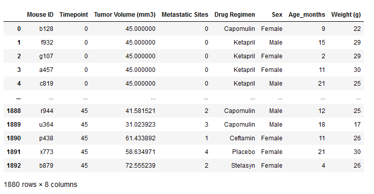
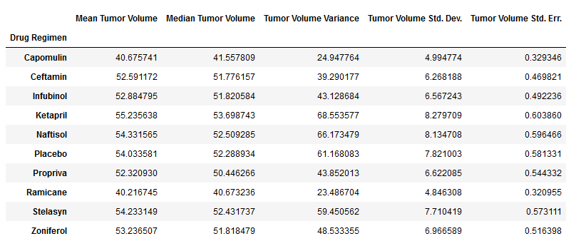
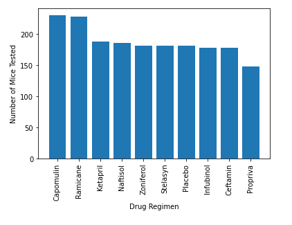
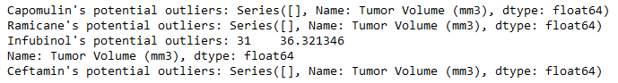
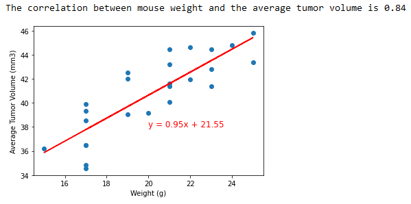

Data sources: Mouse_metadata.csv, Study_results.csv
Software: Python 3.9.7; Jupyter Notebook 6.4.11; pandas 1.3.5; Matplotlib 3.5.1
Tasks include:

The table above displays the clean dataframe after merging the two datasets and dropping duplicate mouse ID’s. There are 248 unique mouse ID’s in the cleaned dataset, with metastatic sites ranging from 0-4, ages ranging from 1-24 months, and weights ranging from 15-30 grams.

The table above displays the summary statistics for each drug regimen. Ramicane is the leading drug regimen across all category statistics with the smallest average tumor volume, median tumor volume, tumor volume variance, tumor volume standard deviation, and tumor volume standard error of mean.

The bar chart above represents the count of mice that were tested for each drug regimen, with Capomulin and Ramicane having the highest number of test subjects, both exceeding 200 mice each.
The pie chart above depicts the distribution of male and female mice that were tested, showing an almost equal split with roughly 50% for each gender.

The image above shows the results of my calculations aimed at identifying outliers for the four drug regimens. The results indicate that there is only one outlier for Infubinol, which falls below the lower bound.

The boxplot above displays the upper and lower bounds and the single outlier I found in my previous calculations for the four drug regimens.

The line chart depicted above shows the decrease in tumor volume for mouse “l509” treated with the drug Capomulin over a period of 40+ days.

The scatter plot above depicts the relationship between the average tumor volume and mouse weight for the drug Capomulin.

Above is an image showing the correlation coefficient (0.84) between mouse weight and average tumor volume for the drug Capomulin. It also displays the linear regression model we calculated to predict the average tumor volume based on the weight of the mouse.
Return to the Homepage